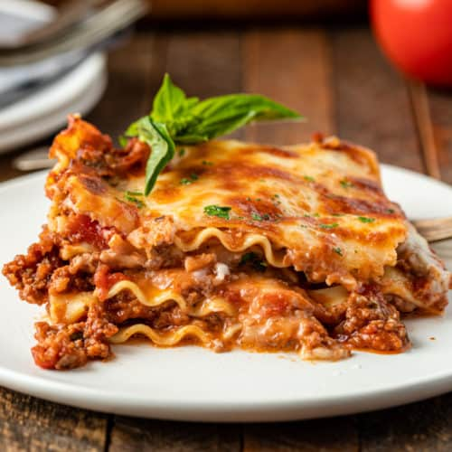

Lasagna

Description
This is the finish and for real finish product of Odin's Recipe
Best ever Lasagna
Ingredients
- Meat Sauce
- Cheese Mixture
- Noodles and Topping
Steps
- Preheat and Prep: Preheat your oven to 375°F (190°C). If using regular noodles, boil them in salted water until al dente and drain.
- Make the Meat Sauce: In a large skillet over medium heat, brown the ground beef (and sausage) with the diced onion until no longer pink. Add the minced garlic and cook for 1 minute. Stir in the marinara sauce and Italian seasoning, then simmer for 10 minutes.
- Mix the Cheese: In a medium bowl, combine the ricotta cheese, egg, Parmesan cheese, parsley, salt, and pepper until smooth.
- Assemble the Lasagna:
- Spread a thin layer of meat sauce on the bottom of a 9x13-inch baking dish.
- Place 3 lasagna noodles over the sauce.
- Spread a third of the ricotta cheese mixture over the noodles, top with a layer of meat sauce, and sprinkle with mozzarella.
- Repeat the layers two more times
- Finish with a final layer of noodles, the remaining sauce, and a generous blanket of mozzarella and Parmesan cheese.
- Bake: Cover the dish with aluminum foil (tent it slightly so it doesn't stick to the cheese) and bake for 45 minutes. Remove the foil and bake for another 10–15 minutes until bubbly and golden. For extra crispness, broil for the last 2–3 minutes.
- Rest and Serve: Let the lasagna rest for 10 to 15 minutes before slicing.
Home